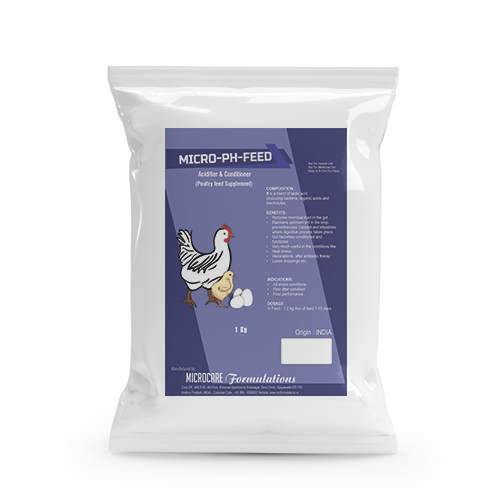
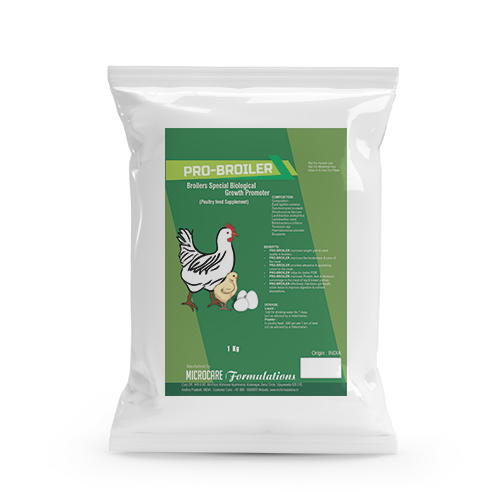
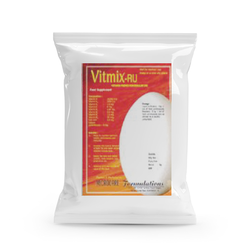

AMMOCUR
For Prevention of Ammonia Production in the Birds & Farms.
Benefits* Adsorbs the ammonia gas produced in the intestine itself and expels out.
* Expelled ammonia will be in the bound form and will not cause harm to environment.
Prevents the production of ammonia in the gut.
* Birds feel comfort and feels nil stress.
* Prevents formation of noxic odours in the farm.

BEST
Vitamin E with Selenium
Water Soluble Powder.
Benefits* Improves Immunity.
* Stable egg productions in layers and breeders.
* Activates cell functions.
* Maintains optimum health.
* Enhances metabolism.
* Fast growths and better body weights in broilers.
* Better fertility and hatchability in breeders.

CALCIPLUS
Calcium & Phosphorus Supplement.
Benefits* Prevents pecking, cannabolism, falling of
feathers etc.
* Improves egg production, bone and muscle
strength, growth and body weights etc.
* Improves bone and muscle strength in
animals.
* Covers the mineral deficiency symptoms like
leg weakness, lameness, thin shelled eggs,
rough shelled eggs etc.

CALCIPLUS-DS
Special Calcium Supplement.
Benefits* Better utilisation of calcium and
phosphorus.
* Prevents leg weakness, lameness,
osteomalacia, perosis, egg breakages,
breakages, thin shelled eggs, rough
shelled eggs.
* Increases growth, body weight and
bone strength in broilers.
* Increases hatchability in breeders.
* Prevents cage layer fatigue, prolapse,
pecking, cannabolism etc.

C-ELECTRO
Natural Vitamin C with Electrolytes.
Benefits* Helps to increase the disease resistance power.
* Helps to relieve the birds from stress factors.
* Helps to increase the health and immunity in Layers, Broilers and Breeders.
* Helps to maintain & increase egg production in layers.
* Helps to increase the fertility and hatchability in breeders.

CRD CARE
Herbal Bronchodilater and Expectorant.
Benefits* Birds relaxes from respiratory troubles quickly.
* Highly useful in the treatment of respiratory diseases
like CRD. coryza etc as a supportive therapy along
with specific treatments.
* Makes to function total respiratory organs with its full
capacity.

CRD CARE-DS
Concentrated Herbal Bronchodilator
& Expectorant.
BenefitsAntimicrobial
Anyispasmodic
Btochodilater
Antioxidant
* Strengthen the respiratory organs to perform well.
* Birds relaxed well and takes normal quantity of feed to produce normal
results.

E-GARLON-POWDER
Unique Formula of Essential Oils with Garlic.
Benefits* Due to its antibacterial, antifungal, antiviral
and antiparasitic properties.
* It helps to prevent gut pathogens and
enhancing its functions at optimum level.
* It having anti-inflammatory properties,
hence it helps in various digestive disorders.

ELECTROMIN
Electrolytes with Essential Minerals.
Benefits* Regulates fluid and ionic balances and prevents dehydration in birds and animals.
* Prevents production drops during summer season in poultry.
* Helps to maintain optimum production and yield in dairy animals.
* Provides relief to birds and animals from stress of all kinds.

FEED PLUS
Pure codliver oil very rich in
natural vitamins and growth
enhancers.
Benefits* Improves feed intake with immediate effect.
* Adds more nutritional value to feed.
* Provides more fishy odour to feed and
improves the palatability of the feed.
* Improves feed intake with immediate effect.
* Adds more nutritional value to feed.
* Provides more fishy odour to feed and
improves the palatability of the feed.

FEED-HERB
Excellent Growth Promoter & Substitute of AGP.
Benefits* Highly recommended for substitute of
Antibiotic Growth Promoter in poultry.
* Acts as a herbal growth promoter.
* Prevents bacterial infections & helps
to achieve extra growth.
* Helps to keep respiratory system
healthy & prevents respiratory
infections.
* Stimulates liver & improves digestion.
* Acts as an immunomodulator & as an
antioxidants also.
* Helps to maintain health & improves
performance.

GOUT CARE
For Control of Gout.
Benefits* Improves functional efficiency of renal tissues.
* Makes the visceral organs to function well.
* Dilutes and dissolves the ureate crystals formed
on viscera.
* Effectively prevents and controls gout.

LONG-LAY
To Improve Egg Production
Capacity For Optimum Longer Period.
Benefits* Stimulate the growth of colonic mucosa, that
increases the hatching percentage of the eggs.
* It rejenuvating the reproductive tract of laying
bird and helps in to improve laying capacity for
optimum-longer period.
* Acts as a body activator and performance
booster
* Withania somnifera promotes the innate
immune system and disease resistance power.
* It reduces the level of egg yolk lipids,
cholesterol and tri-glycerides of birds.

Madhura-1%
Coccidiostat Feed Supplement.
Benefits* Prevents the occurance of protozoan
infections especially coccidiosis.
* Works equally on all types of Eimeria oocysts.
* No interferences with other chemicals or
antibiotics or other feed supplements used in
poultry.
* Very safe, no side effects and very effective.

MCF-BIRD CURE
Herbal Immunomodulator-
Supportive Therapy for Bird flu.
Benefits* Acts as a best supportive therapy during bird flu outbreak in poultry.
* Strengthens immune system & disease resistance power against bird flu
and other bacterial and viral diseases.
* Improves general health condition & performance.

MCF-BMD-10
Bacitracin Methylene Disalicylate (10%)- Poultry Feed Additives.
Benefits* Highly useful in necrotic enteritis cases.
* It eliminates gut pathogens without disturbing normal gut flora.
* Highly suitable to use as a combination along with anticoccidials, specially improve growth in combinations with ionophores.
* It is safe, no tissue residues and negligible disruption of beneficial gut flora.
* Highly useful to enhance performance in broilers, layers and breeders.

MCF-BROILER-VITMIX
Vitamin Premix for Broiler.
Benefits* Covers vitamin deficiencies.
* Helps to maintain.
* Optimum Health.
* Immunity.
* Growth.
* Body Weight.
Indications:
* As a routine vitamin feed additive.
* As a performance booster.

MCF-CHIK
Vitamins & Amino Acids Solution.
Benefits*Prevents and corrects avitaminosis and
Malnutrition
* Helps to reduce mortality
* Works as supportive therapy in state like-Moulting.

MCF-CM
Antibiotic Growth Promoter (Ciprooxacin 5% & Metronidazole 5%).
Benefits* A broad spectrum antibiotic for the prevention of infectious diseases caused by gram positive and gram negative bacteria.
* Helps to prevent digestive disturbances.
* As a growth promoter.

MCF-COLICURE
Herbal Remedy for E.Coli & Gut Pathogens.
Benefits* It helps to maintain gastrointestinal health.
* Improve nutrient absorption and FCR.
* Improve growth and weight gain in broilers and pig.
* Improve performance and productivity in layers.
* All selected herbs are having strong antibacterial and antimicrobial properties and acts as a best alternative of antibiotics used to control e. coli and gut pathogens.
* Helps to improve feed efficiency.

Product Name 1
Short description of the product.
Benefits

Product Name 2
Short description of the product.
Benefits* Acts as best growth promoter.
Prevents the occurrence of CRD
Helps the birds not to feel stress.
Indications:
* History of incidences of mycoplasma in the
premises.
* Early stage of on set of symptoms of
mycoplasma.
* As a supportive therapy along with potential
anti mycoplasmal agents during outbreaks
of myco plasma infections.

MCF-EMULSER
Bio-Surfactant Naturally.
Benefits* In Breeders:
- Stimulates early reproductive maturity.
- Better egg size.
- Better hatchability.
* In Layers:
- Helps in achieving standard body weight.
- Less pullet eggs / standard eggs size.
- Standard performance with feed saving.
* In Broilers:
- Co-work with less bile salt and lipase enzyme
to digest fat globules.
- Emulsifies any oil.
- Helps in improving dressing percentage.

MCF-GROW
Multi Vitamins & Minerals (WSP).
Benefits* Improve anabolism effect which helps to increase fat and protein
metabolism.
* Initial feed supplement for chicks for proper and faster growth.
* Improve resistance power to diseases.
* Helps to reduce all kinds of stress.
* Improve fertility and hatchability.

MCF-LAYER-VITMIX
Vitamin Premix for Layer.
Benefits* Covers vitamin deficiencies.
* Helps to maintain.
* Optimum Health.
* Growth Body Weight.
* Egg Production.

MCF-LN
Performance Booster & Growth Promoter (Lincomycin 1%, Neomycin 1%).
Benefits* Broad spectrum activity and effective on
both gram positive and gram negative
bacteria.
* Reduces the incidence of bacterial
diseases.
* Most suitable to use during viral infections
to prevent the secondary bacterial
infections.
* Helps to improve the growth, body weight
with economical FCR in broilers.
* Helps to increase the egg productions and
egg quality in commercial layers.

MCF-N-DOX
Vitamins & Amino Acids Solution.
Benefits* Helps as best growth promoter.
* Helps for better feed conversion.
* Very effective bacteriostat against many gram
negative and gram positive strains.
* Minimises the bacterial infections at sub
clinical phase.
* Can be used as a supportive therapy along
with specific treatment for all bacterial and
viral outbreaks.

MCF-OXID
The Complete Antioxidant for Compound Feeds & Feed Ingredients.
Benefits* Prevents all three stages of auto-oxidation.
* Initiation.
* Propagation.
* Terminal stages.
* Improves shelf life.
* Prevents rancidity and odours.
* Protects feed quality.
* Protects vitamins.
* Retains feed freshness and palatability.
* Preserves nutrients in the feed.

MCF-SALMIX-12
Micro Granulated Salinomycin Sodium 12% to Prevent Coccidiosis.
Benefits* Prevents coccidiosis in poultry and controls all major
coccidia spp.
* It is commonly used for prevention of coccidiosis
and stable in all common methods of feed
preparation.
* It is widely used ionophore worldwide for many
years.

MCF-TIM-10
Tiamulin 10% Premix.
Benefits* For the prevention of CRD in broilers,
layers and breeders.
* Improves egg production in layers.
* Increases body weights in broilers.
* Increases fertility and hatchability in
breeders.

MCF-TYLO-10
Feed Supplement for Better Performance & Prevention of CRD (Tylosin Phosphate 10%).
Benefits* Prevents the incidence of CRD.
* Reduces the severity of the CRD & its losses.
* Helps to increase growth and body weight in
Broilers.
* Helps to increase Egg production in Layers.
* Helps to increase the fertility & hatchability
in Breeders.

MICRO PH
Mixture of yeast extract, lactic acid, citric acid, sorbic acid,
formic acid, acetic acid, ammonium formate, glycerides of edible fatty
acids etc in ideal proportions.
Benefits* Reduces water pH and controles pathogenic microbial load in the drinking
water to be given to poultry.
* Reduces pH in the gut of the poultry and arrests the
growth of pathogenic bacteria like E-coli, salmonella etc.
* Acts as good and safe sanitizer of water.

MICRO PROTEIN
For Better Yield in Broilers & Layers.
BenefitsPOULTRY - Broilers : * Improves muscle and
bone strength * Increases body weights * Helps for fast
growths * Prevents leg weakness & lameness * Provides
optimum health & immunity.
Layers : * Increases egg productions and maintains for longer periods
* Improves quality & quantity of egg contents.

MICRO-A PLUS
Vitamin A Concentrate.
Benefits* Relieves from stress and provides additional
strength to tolerate additional stress.
* Helps to maintain stable egg production with higher peaks in layers.
* Improves fertility and hatchability in breeders.

MICRO-BIOTOX-SPL
Innovative Biological Toxin Destroyer & Growth Promoter.
Benefits* It is an innovative biological toxin destroyer, it contains bioactive metabolites, probiotics and enzymes with organic acids.
* Bioactive metabolites extracted from selective probiotic strains which acts as a strong antifungal and antimicrobial, that helps to control fungal growth and toxins.
* It contains selective probiotics, that detoxifies mycotoxins by biotransformation mechanism.
* It effectively arrests fungal growth and controls further production of mycotoxins.

MICRO-BREED
Breed UP is a highly specialized formulation with special selective herbs
having the functional ability of enhancing breeding performance.
Benefits* Increases sexual mode.
* Helps for better sperm quantity and quality.
* Increases fertility and hatchability.
having the functional ability of enhancing breeding performance.
* Participate in sexual actions more frequently.

Microcare EGG FORMULA
Special Calcium Supplement.
Benefits* Maintains normal health and immunity.
* Minimizes uneven sizes and non-specific
mortalities.
* Increases egg productions and
maintains longer periods.
* Relieves from stress caused due to
debeaking, deworming, vaccinations,
handling, transportation, climatic
disturbance, disease outbreaks etc.

MICRO-FER
Malt Based Vitamins, Iron, Copper &
Calcium Supplement for Poultry & Live Stock.
Benefits* Anaemia, General debility, Stunted growth, Iron.
* deficiency, Rickets & Osteomalacia, Anorexia.
* Lactation stress, Egg breakage, Supportive therapy.
* During diseases etc.

MICRO-FURA
Furasolidone 20% Feed Supplement.
BenefitsBroilers:
* Faster growths.
* Higher body weights.
* Better FCR.
* Lowers stress.
Layers:
* Increases egg production and controls loose droppings.
* Better FCR, better hatchability lowers non specific mortalities.
LIVE STOCK:
* Helps to control ubclinical stage of infection.
* Controls loose droppings.

MICRO-LAME
Specific Nutrient Supplement for Lameness.
Benefits* Provide specific nutrients to reduce severity of Lameness and Leg weakness.
* Highly recommended to use in after effects of Rani khet disease and Vaccination reaction.
* Helps to reduce the incidences of broken eggs, thin shelled eggs poor shelled eggs etc.

MICRO-PH-FEED
MICRO-PH-FEED is a blend of lactic acid
producing bacteria, organic acids and electrolytes.
Benefits* Reduces microbial load in the gut.
* Maintains optimum pH in the crop, proventrieculus Gizzard
And intestines where digestive process takes place.
* Gut becomes conditioned and functional.
* Very much useful in the conditions like.

MICRO-SB 21
It is a specialized Probiotic preparation,
containing Sacharomyces boulardii added with
B.Subtillis.
Benefits* S. boulardii has an anti-inflammatory
properties, which helps to maintain
gut health in Inflammatory Bowel
Disease or Irritable Bowel Syndrome.
* It prevents various digestive
disorders.
* Improves growth and performance in
all birds. Improves feed efficiency
and weight gain in commercial
broilers.

MICRO-TM
Concentrated Trace Mineral.
Benefits* Provides essential minerals and regulates optimum health and performance.
* Avoids symptoms like leg weakness, lameness, cage layer fatigue, cannabolism, prolapse, rickets, thin shelled eggs etc.
* Maintains stable egg productions in layers with better quality shells.
* Improves bone and muscle strength in broilers and helps for better growth and body weights.

MICRO-TM-EXTRA
Trace Mineral Concentrate.
BenefitsPrevents : Leg weakness, lameness, loose shell
eggs, thin shell eggs, shell breakage, rough shelled
eggs, poor feathering, poor hatchability, poor growth,
bone deformities etc.
Improves : Bone strength, egg quality, egg quantity,
growth, body weight, health, activeness, immunity,
growth, body weights etc.

MICROTOX
Broad Spectrum Mould Inhibitor Cum Toxin Binder.
Benefits* Acts well on toxins and moulds.
* Controls the pathogenic bacteria in the gut.
* Decreases the chances of disease outbreaks.
* Increases the quality of water by reducing pH.
* Helps for stimulation of liver, better digestion,absorption of nutrients.
* Helps to increase renal function and purity of blood.

MICROTOX-SPL
Special Toxin Binder Liver Stimulant.
Benefits* Effectively and selectively binds mycotoxins and excrets through faeces.
* Prevents major production slumps and immunity loss.
* Binds gut microbes too and prevents microbial infections of the gut.
* Prevents formation of moulds in finished feed on storage.
* Improves liver functions and helps for better egg production, health and immunity.

MICRO-ZYME
Multi Enzyme Feed Additive.
BenefitsHelps for –
* Better FCR.
* Better Digestion.
* Better feed utilisation.
* Better health & immunity.
* Better growth & body weight.
* Better egg production.
* Prevents and controls loose droppings.
* Provides comfort in the gut.

MINGROW-GEL
Rapid Growth Promoter.
Benefits* Improves skeletal structure and weight gain in broilers.
* Enhance performance in layers & breeders.
* Improves egg content and egg shell quality.
* Improves immunity & general health.

OPTILIV
Liver Correctant.
Benefits* Corrects liver disorders and brings
back to normal healthy conditions.
* Prevents fatty livers, production
slumps, uneven growths etc.
* Helps for more egg productions,
persistency and better FCR.

ORGANO-GARLIC
Essentail oil and garlic extract for gut & respiratory health.
Benefits* Improve gut health and digestive functions.
* Prevent gut pathogens & avoid infections.
*Improve respiratory functions & prevents diseases.
*Improve liver functions & feed digestion.
*Improve immune system & keep bird healthy.
*Helps to improve weight gain & FCR in broilers.

PRO-BROILER
Broilers Special Biological
Growth Promoter.
Benefits* PRO-BROILER improves weight gain & meat
quality in broilers.
* PRO-BROILER improves the tenderness & juice of
the meat.
* PRO-BROILER effectively maintains gut health,
which helps to improve digestion & nutrient
absorptions.
* PRO-BROILER helps for better FCR.
* PRO-BROILER provides attractive & appetizing
colour to the meat.
* PRO-BROILER improves Protein, Ash & Moisture
percentage in the meat of leg & breast portion.

VITMIX-RU
Vitamin Premix for Regular Use.
Benefits* Helps to maintain optimum health, performance and immunity.
* Provides the normal demand of both fat and water soluble vitamins in birds body.
* Keeps the bird with better growth, body weights, egg production etc.
* Improves FCR and nutritional value of the feed.